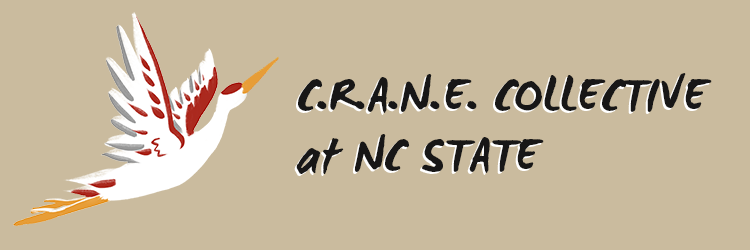

The CRANE Collective (Critical Asian Narratives and Engagement) at NC State is an Asian American umbrella org that intends to cultivate a community for Asian American students at NC State. The collective will be working with NC State’s Multicultural Student Affairs to facilitate Asian American focused events and workshop and oversee the 25 Asian organizations at NC State (as of Fall 2021). I am working as a coordinator, alongside several other individuals, that are equally passionate about the local Asian American community.
As a logistical coordinator, I reserve rooms, determine availability with other organizations, and orchestrate preparation for events run by CRANE. However, as a non-hierarchal collective, there is not a firm role on responsibilities. I have accomplished other tasks, which include:
If you would more information about CRANE Collective, visit our website, and follow us on our Instagram and Facebook!
